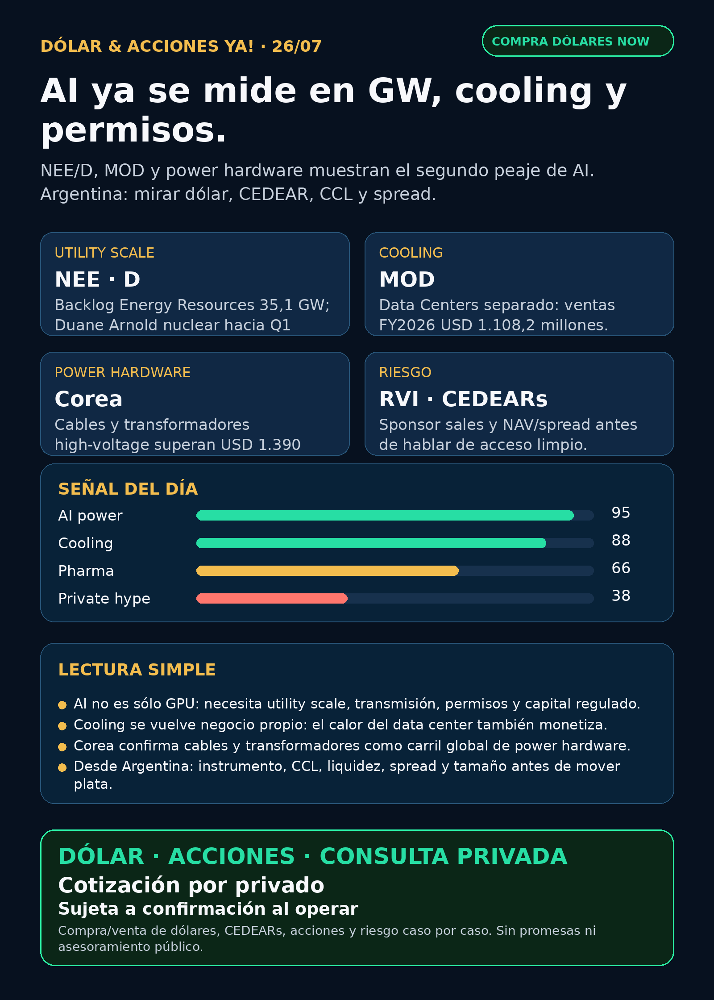

AI power: gigawatts, cooling y permisos.
NextEra/Dominion muestran escala utility; Modine muestra cooling como negocio; Corea refuerza cables y transformadores. Desde Argentina: mirar dólar, CEDEARs, CCL y spread.
Texto WhatsApp
Placa del día

Dólar & Acciones YA — Stock Radar — 26/07
Lectura simple del día
Hoy no apareció un shock de domingo, pero sí una señal importante escondida en filings del viernes: AI ya no se mide sólo en chips; se mide en gigawatts, cooling, transformadores, cables, permisos y capital regulado.
En criollo: la app de inteligencia artificial parece liviana, pero atrás necesita data centers, electricidad estable, subestaciones, turbinas, cables, agua, equipos de cooling, deuda y permisos. Por eso hoy el radar mira NEE/D, MOD, power hardware de Corea y la capa Argentina de dólar/CEDEARs.
Esto está ordenado por valor educativo/señal de radar. No es orden de compra ni asesoramiento financiero personalizado. Buena empresa ≠ buen precio de entrada ≠ buen instrumento para Argentina ≠ buen tamaño dentro de cartera.
Tesis central
La señal del día es: el segundo peaje de AI es infraestructura física.
NEE/Dmuestran el carril utility: generación, transmisión, storage, nuclear, grid modernization y demanda de data centers.MODmuestra el carril cooling: el calor del data center se transforma en segmento operativo separado.- Corea refuerza power hardware: cables de alta tensión, transformadores extra-high-voltage y distribución eléctrica.
RVIrecuerda el riesgo de wrappers privados: no todo lo que promete exposición a privadas es acceso limpio.LLY/retatrutide sigue interesante, pero hoy queda como radar pendiente de primaria, no headline fuerte.
Ranking educativo por calidad de tesis
1. AI power utility — señal fortalecida
- NextEra Energy (
NEE) / Dominion Energy (D): filing SEC del 24/07/2026 con news release de NextEra: adjusted EPS +9,5% interanual en Q2, expectativa de CAGR adjusted EPS 8%+ hasta 2032, backlog de NextEra Energy Resources de aproximadamente 35,1 GW, y Duane Arnold nuclear esperado online no más tarde de Q1 2029. En comunicación 425 sobre Dominion, management conecta la operación con power demand, generación, transmisión, grid modernization y data-center opportunity. - Fuentes: SEC 425/news release: https://www.sec.gov/Archives/edgar/data/753308/000110465926086667/tm2621285d1_425.htm ; Q&A/data-center opportunity: https://www.sec.gov/Archives/edgar/data/753308/000110465926086699/tm2621285d3_425.htm
- Lectura en criollo: si AI necesita electricidad, no alcanza con tener chips; hace falta utility scale, permisos, transmisión y capital que pueda ejecutar obras enormes.
- Accionabilidad: global/internacional vía tickers USA
NEEyD. Para Argentina, instrumento/CEDEAR/liquidez/spread no verificado hoy; puede haber proxy local imperfecto vía energéticas, pero no es la misma exposición. - Riesgo: aprobación regulatoria, deuda, capex, timing, valuación y ejecución.
2. Cooling / thermal management — candidato fuera de watchlist
- Modine Manufacturing (
MOD): 8-K del 24/07/2026. Desde el 01/04/2026 reorganizó Climate Solutions y separó dos segmentos:Data CentersyCommercial HVAC. El Exhibit 99.1 recastea Data Centers con net sales FY2026 de USD 1.108,2 millones y operating income FY2026 de USD 194,5 millones; Q4 FY2026 Data Centers tuvo USD 401,9 millones de ventas. - Fuentes: SEC 8-K: https://www.sec.gov/Archives/edgar/data/67347/000110465926086644/mod-20260724x8k.htm ; Exhibit 99.1: https://www.sec.gov/Archives/edgar/data/67347/000110465926086644/mod-20260724xex99d1.htm
- Lectura en criollo: data center no es sólo GPU. Si el rack calienta, alguien tiene que enfriar, mover aire/agua, manejar thermal y mantener uptime.
- Accionabilidad: global/internacional vía
MOD. Argentina/CEDEAR/liquidez no verificado hoy. - Riesgo: múltiplos, margen, backlog, concentración de clientes, competencia y ciclo de capex.
3. Gigawatt buildout — no gana el anuncio, gana la ejecución
- Marco sectorial: Data Center Frontier publicó el 24/07/2026 que la etapa de anuncios gigawatt empieza a chocar con ejecución: financiamiento, ratepayer protection, agua, oposición local, confiabilidad de red y power path creíble. El artículo cita Alphabet con capex 2026 esperado de USD 195.000–205.000 millones, OpenAI Project Camellia de 3,2 GW en Georgia y Aligned Data Centers a enterprise value aproximado de USD 40.000 millones.
- Fuente: https://www.datacenterfrontier.com/hyperscale/news/55393364/the-gigawatt-buildout-faces-the-execution-test
- Lectura: esto fortalece la tesis de
GEV, utilities, power hardware, grid, cooling y construction/engineering. Pero las cifras de empresas específicas deben cruzarse con fuentes primarias antes de usarlas para decisión. - Accionabilidad: marco educativo; no instrumento directo.
4. Power hardware Corea — radar global, no ejecución local fácil
- LS Electric / LS Cable & System / sector Corea: Chosunbiz reportó Q2 récord de LS Electric: sales 1,577 trillones de won, operating profit 178,5 billones de won, backlog 7 trillones de won, impulsado por data-center power distribution y extra-high-voltage transformers; ventas de extra-high-voltage transformers +91,2% interanual. BusinessKorea reportó exportaciones H1 de high-voltage power cables por USD 689,14 millones y extra-high-voltage transformers por USD 701,52 millones.
- Fuentes: Chosunbiz: https://biz.chosun.com/en/en-industry/2026/07/23/ZVLGPBFLMRGGDNC52TYXSUI5H4/?outputType=amp ; BusinessKorea: https://www.businesskorea.co.kr/news/articleView.html?idxno=273584
- Lectura: la tesis de transformadores no termina en
GEV, Hitachi o Siemens Energy. Hay cadena asiática capturando demanda de AI data centers y renovación de red. - Accionabilidad: radar global. Para Argentina, no accionable directo hasta verificar tickers, broker, liquidez y acceso.
5. Private wrappers — bandera amarilla instrumental
- RVI / Robinhood Ventures Fund I (
RVI): Form 4 filed 24/07/2026: Robinhood Markets vendió acciones deRVIen transacciones del 22/07 y 23/07. El XML muestra 15.650 shares a USD 27,49; 10.549 a USD 26,02; 118 a USD 26,79; remaining shares 13.181.275. Proceeds aproximados: USD 764.900; VWAP aproximado: USD 26,90. - Fuente: SEC XML: https://www.sec.gov/Archives/edgar/data/2085091/000178387926000101/wk-form4_1784928110.xml
- Lectura: un wrapper de privadas no se puede vender como “acceso limpio” a SpaceX/OpenAI/Anthropic sin NAV, premium/descuento, holdings, sponsor sales, float, liquidez y acceso real.
- Accionabilidad: debilita instrumento / vigilar riesgo. No es oportunidad por sí mismo.
Watchlist priorizada de hoy
- NEE / D: señal fortalecida por utility scale, backlog Energy Resources, nuclear Duane Arnold y data-center opportunity. En radar; no recomendación.
- MOD: candidato nuevo/fuera de watchlist por cooling/data centers como segmento separado.
- GOOGL/GOOG: tesis estructural vigente por demanda cloud/data-center capex; hoy usado como marco, no catalyst nuevo primario.
- GEV / Hitachi / Siemens Energy / Corea power hardware: tesis estructural de segundo peaje de AI; sin primaria fresca mejor que
NEE/MODesta madrugada. - NVDA / TSM / ASML / MU / AVGO: moat AI semis vigente; sin señal primaria nueva superior hoy.
- RKLB: titulares sobre contrato/defense deal siguen sin primaria Rocket Lab/DoD/SEC nueva. Estado: auditar, no elevar como hecho.
- TSLA: autonomía/physical AI sigue en radar desde filings previos; sin actualización primaria nueva.
- AAPL / PLTR / HOOD: revisados; sin señal operativa nueva fuerte.
HOODaparece indirectamente porRVIy wrappers privados. - LLY: retatrutide Phase III aparece en fuente secundaria; interesante, pero pendiente de primaria Lilly/FDA antes de headline fuerte.
- AZN / NVO / MRK / PFE / JNJ: revisados; sin primaria nueva superior hoy.
- Gold / GLD / GOLD / B: instrumento ambiguo. No publicar precio ni tesis hasta saber si es ETF oro, Barrick u otro activo.
Portfolio/base Mi Simulación
La cartera de Ricardo fue liquidada, devuelta y terminada según estado vigente del 24/06. No hay P&L activo que reportar. Esta sección queda como vigilancia para una próxima compra o nuevo inversor, no como rendimiento de cartera real.
Capa Argentina: dólar, CEDEARs e instrumento
- BlueLytics 2026-07-24 19:45: oficial venta $1.519, blue venta $1.545. CriptoYa 26/07 08:45: USDT ask $1.597,40; MEP AL30 $1.532,78 y CCL AL30 $1.622,15 con timestamps de cierre 24/07 16:59/24/07 16:59.
- Para ejecutar hoy: broker vivo. BlueLytics viene con último update del 24/07; MEP/CCL AL30 pueden ser cierre previo; USDT/cripto fue refrescado esta mañana. No usar esto como precio exacto de ejecución.
- CEDEAR ≠ acción USA: importan ratio, liquidez, spread, volumen, CCL implícito, comisiones y tamaño de posición.
- Energía argentina revisada:
YPF,PAM/PAMP,TGS,VIST,CEPU. Sin primaria nueva más fuerte hoy; mantener como radar educativo por Vaca Muerta, gas, power y riesgo país. - Si Charly quiere cartera Argentina, próximo paso es verificar CEDEAR/instrumento local, spread y CCL antes de hablar de entrada.
Energía y power hardware
- Fuerte hoy:
NEE/Dpor scale utility, generación/transmisión, nuclear y data centers. - Cooling:
MODentra como candidato de data-center thermal management. - Transformadores/power hardware revisados: GE Vernova (
GEV), Hitachi Energy/Hitachi (6501.T/HTHIY), Siemens Energy (ENR.DE), HD Hyundai Electric (267260.KS), Hyosung Heavy Industries/HICO (298040.KS), Virginia Transformer y Delta Star. Sin primaria fresca superior hoy, pero tesis estructural intacta. - En criollo: AI necesita que llegue electricidad estable al edificio correcto. Ese cuello de botella puede tardar años por equipos, permisos y red.
Pharma/salud
LLY/ retatrutide: Manufacturing Chemist reportó Phase III TRIUMPH-2/TRIUMPH-3 con objetivos cumplidos, hasta 22,6% de pérdida de peso y BLA planeada para Q1 2027; también aclara que no estableció reducción clara de MACE. Estado: radar interesante, pendiente de primaria Lilly/FDA/company antes de headline fuerte. Fuente secundaria: https://manufacturingchemist.com/eli-lilly-retatrutide-hits-phase-iii-goals-fdaAZN: mantiene señal limpia de corridas previas por oncology/Etcamah vía SEC 6-K.NVO,MRK,PFE,JNJ: revisados sin señal primaria fresca superior.- Recordatorio: ensayo positivo ≠ aprobación FDA ≠ revenue inmediato.
Radar amplio fuera de watchlist
- Defensa/aeroespacial:
AVAV, GE Aerospace,RTX,LMT,NOC,GD,HWM,KTOS,BA,ITA/XARrevisados. No apareció primaria nueva mejor que señales ya indexadas. Estado: revisado sin señal nueva fuerte. - Space/orbital AI:
RKLB,SPCX/SpaceX, Starlink/Starship y wrappers privados revisados. Sin filing nuevo material verificado. Titulares secundarios quedan audit-only. - Autonomous mobility / physical AI:
TSLA, Waymo/Alphabet, Uber, Zoox/Amazon y Joby revisados. Sin primaria nueva comparable hoy. - Crypto gobernado / rails: Robinhood Chain/Stock Tokens/Agentic Accounts siguen como educación de infraestructura y agentes; sin analytics primaria/disclosure oficial nuevo. No token trade.
- Mercado amplio: commodities, bancos/fintech, REITs/data centers e industriales revisados sin señal superior a AI power/cooling.
Red flags / hype para ignorar
RKLBcontrato/defense deal sin primaria nueva: auditar, no publicar como hecho.SPCX/SpaceX por stake/lockup/valuation sin SEC filing real: audit-only.LLYsi sólo viene de nota secundaria: radar sí, headline fuerte todavía no.RVI/DXYZ/VCX como “acceso fácil” a privadas: incompleto sin NAV, premium, holdings, sponsor sales y liquidez.- CEDEAR con spread alto: puede arruinar una tesis global buena.
Qué mirar después
- SEC/IR de
NEE/Dpor avances regulatorios de la combinación y data-center demand. - Próximos earnings/filings de
MOD,GEV, power hardware y cooling para saber si el segmento escala con margen. - Fuente primaria Lilly/FDA/Novo antes de elevar GLP-1 como catalyst.
- Primaria Rocket Lab/DoD/SEC antes de hablar de contrato RKLB.
- CEDEARs/liquidez local y CCL implícito de cualquier idea que Charly quiera llevar a cartera Argentina.
Recibo visible de cobertura
Revisado: watchlist base, AI infra/semis, energéticas argentinas, power hardware/transformadores, pharma/GLP-1/oncology, defensa/aeroespacial, space/private wrappers, autonomía/physical AI, fintech/AI agents, crypto gobernado y mercado amplio. Si un carril no aparece arriba, fue porque no tuvo señal primaria nueva más fuerte.
Servicio privado
Dólar · CEDEARs · Acciones · Riesgo. Compra/venta de dólares y consultas privadas caso por caso. Cotización sujeta a confirmación al momento de operar.
Disclaimer
Esto es research educativo para decisión humana. No es asesoramiento financiero personalizado ni instrucción de compra/venta.
Links
Web oficial: https://simulacion-uno-finanzas.web.app/
Canal WhatsApp: https://whatsapp.com/channel/0029Vb8G9fqGzzKSVUX3hc1S